01 / HERO · 降噪，不丟景深
R2 乾淨但背景薄；R3 空間深但太搶；R4 保留場景感、減少彩光，同時保留真相。

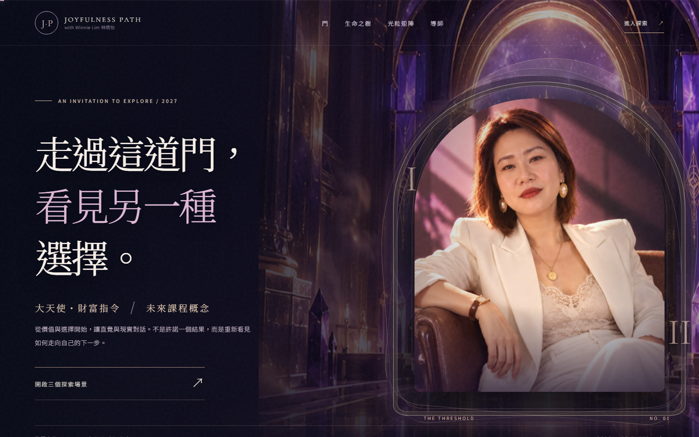
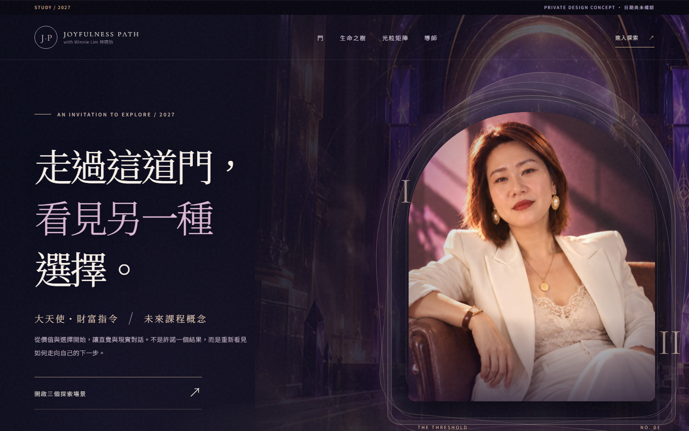
HERO · 手機實際裁切
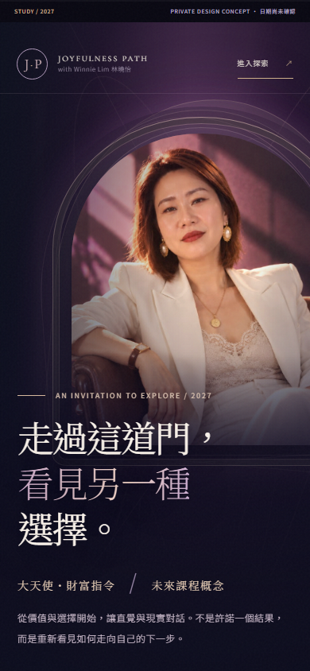
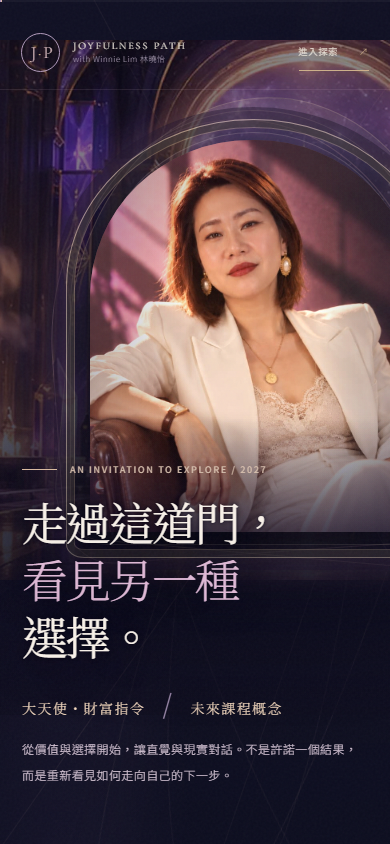
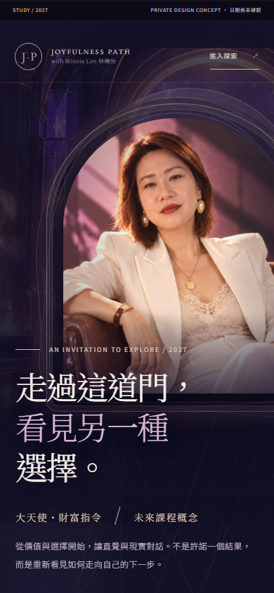
02 / THRESHOLD · 留寬門廊，唔要貼圖框
R3 右邊似獨立海報；R4 使用羽化接返左邊米白敘事區，令畫面變成同一個場景。
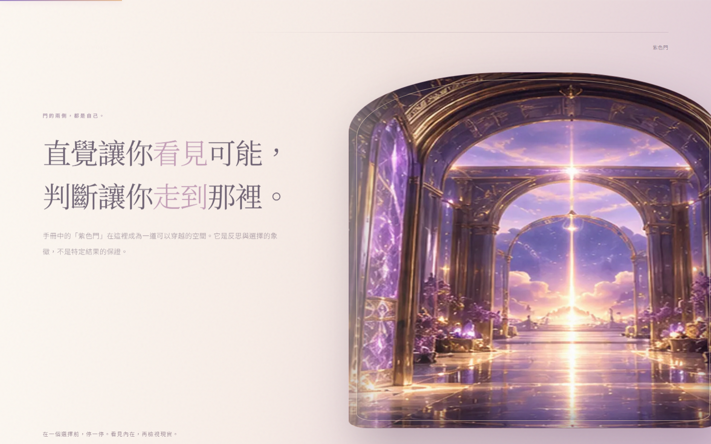
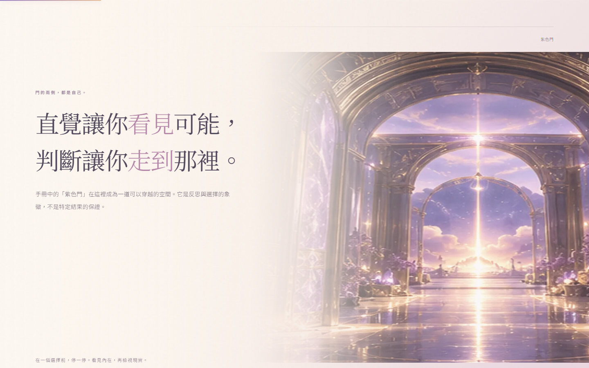
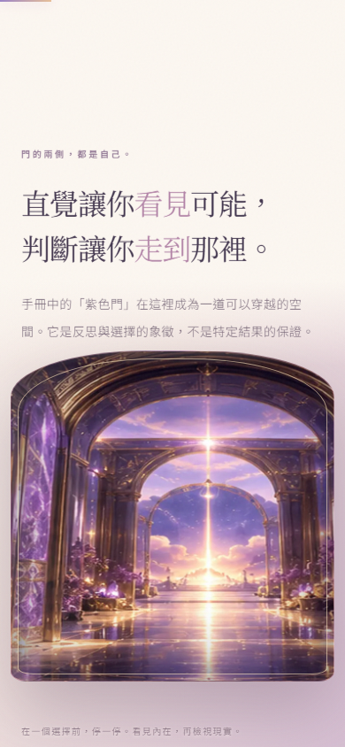
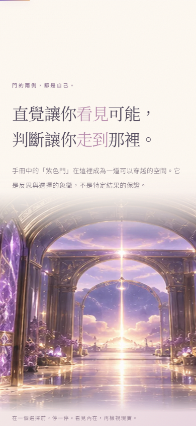
03 / TREE · 暫時守住真互動
冇新場景能夠明顯改善十個節點對位，所以唔作無意義改圖；全部保留真正 HTML/SVG 節點同 JS。
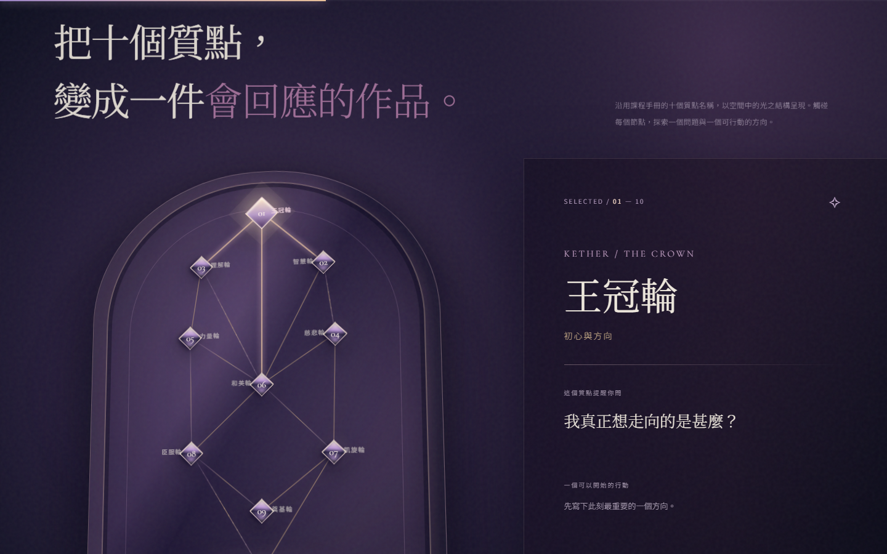
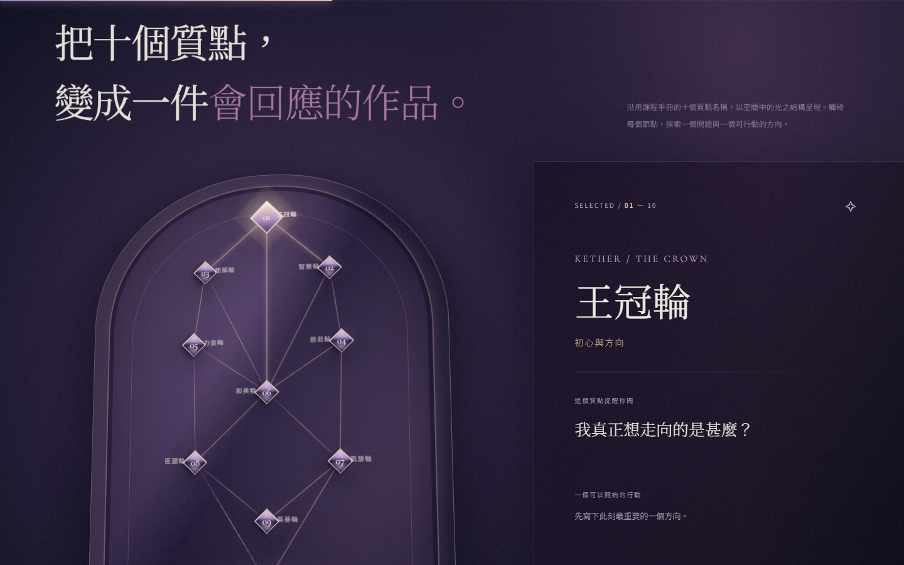
04 / MATRIX · R3 太嘈，退回 R2
R3 光學場景壓住互動晶體；R4 恢復簡潔的舞台結構，保留可操作的三軸切換。

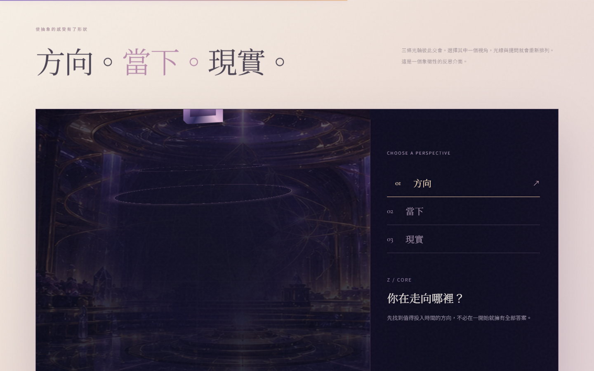
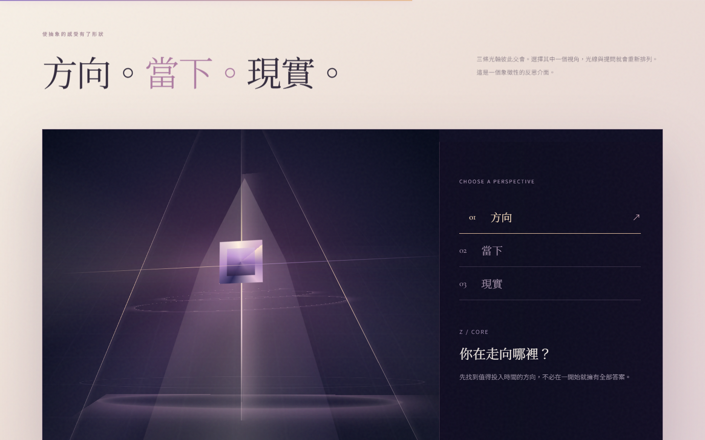